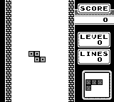

NES / Famicom
Un controller cu două butoane de acțiune și o bibliotecă în care multe idei au devenit clasice.
Deschide profilulConsole / Hardware select
Din sufragerie până în buzunar: descoperă dispozitivele din spatele jocurilor, comenzile lor și lucrurile care le-au făcut diferite.
Fiecare profil explică istoria, hardware-ul și ce să verifici înainte de a folosi un model original. Imaginile ilustrează jocurile consolelor.
Un controller cu două butoane de acțiune și o bibliotecă în care multe idei au devenit clasice.
Deschide profilul
Energie de arcade în sufragerie, un controller comod și un arici care schimbă ritmul.
Deschide profilul
Anul indică prima lansare a fiecărei console în Japonia.
| Consolă | Prima lansare | Familie | Format |
|---|---|---|---|
| NES / Famicom | 1983 | 8 biți | Pentru televizor |
| Mega Drive / Genesis | 1988 | 16 biți | Pentru televizor |
| Game Boy | 1989 | 8 biți · portabilă | Portabilă |